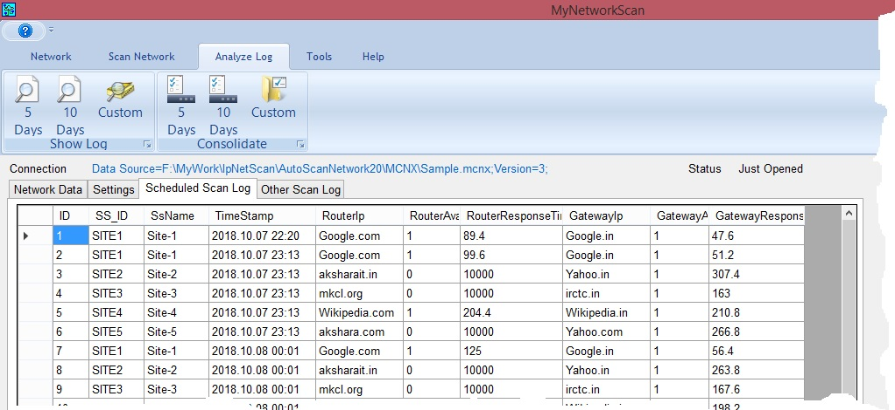

Using this tab either we can show last 5 or 10 days log data of scheduled scan or we can consolidate the data so as to get the average for last 5 or 10 days data. This data displayed in a separate window. First we can observe the consolidated data for last 10 days and then for last 5 days and by comparing these data we can judge whether there is any improvement in problematic locations.